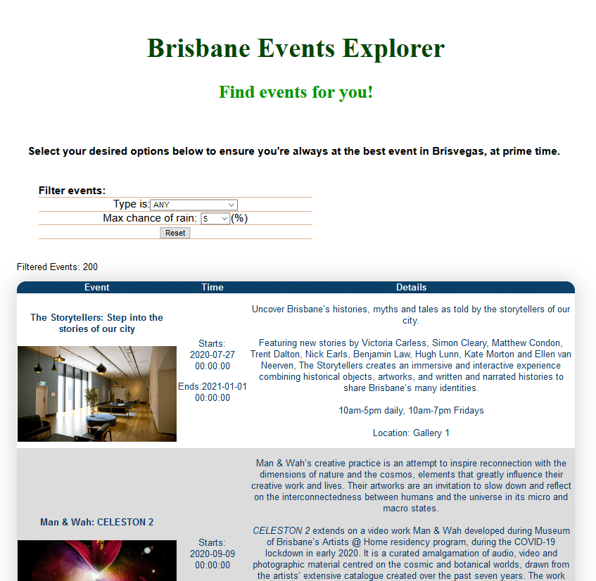

Uses the Brisbane City Council Events API, along with the Willy Weather API
This includes most of the processing server-side, with it's own API routes for search queries, requested by users on the front-end.
Note the ability for users to filter local events based on their desired criteria, such as the probability of rainfall.
Static example (screenshot)
As this is currently not running on a server, a static screenshot of the application is shown below.
